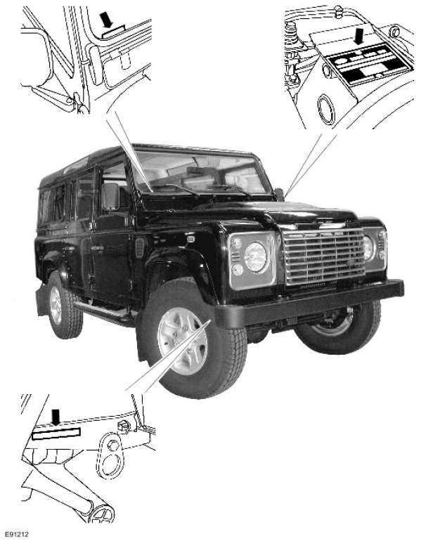
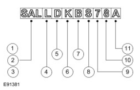
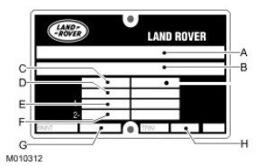
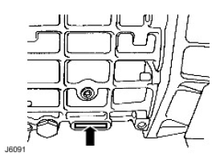
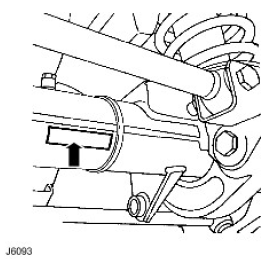
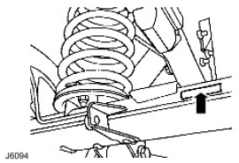
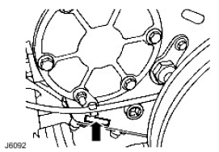
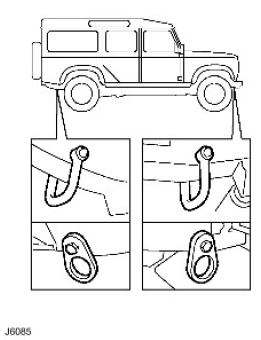
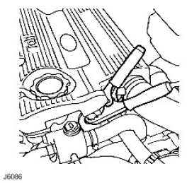

TIE0031810
The VIN number is found in three locations:


| VIN Position | Character | Identifies |
|---|---|---|
| 1-3 - World identifier | SAL | Land Rover (UK) |
| 4,5 - Vehicle type | LD | Defender |
| 6 - Class | H | 110 inch |
| 6 - Class | K | 130 inch |
| 6 - Class | V | 90 inch |
| 6 - Class | B | 110 Extra heavy duty |
| 7 - Body style | A | Regular |
| 7 - Body style | B | 3 Door station wagon |
| 7 - Body style | F | 4 Door Crew Cab non h/cap |
| 7 - Body style | H | H/cap with or without 4 door crew cab |
| 7 - Body style | M | 4 Door Station Wagon |
| 8 - Engine | S | 2.4L Euro spec (EU4) |
| 8 - Engine | T | 2.4L ROW spec (non cat) |
| 9 - Transmission and steering | 7 | RHD 6 speed manual transmission |
| 9 - Transmission and steering | 8 | LHD 6 speed manual transmission |
| 10 - Model year | 7 | 2007 Model year |
| 10 - Model year | 8 | 2008 Model year |
| 10 - Model year | 9 | 2009 Model year |
| 11 - Plant | A | Solihull |
| 11 - Plant | C | Zimbabwe |
| 11 - Plant | F | KD |
| 11 - Plant | J | Malaysia |
| 11 - Plant | K | Kenya |
| 11 - Plant | P | Pakistan |
| 11 - Plant | W | Turkey |

The VIN plate contains the following information:
A - Type approval number
B - Vehicle identification number
C - Maximum permitted laden weight for vehicle
D - Maximum vehicle and trailer weight
E - Maximum road weight - front axle
F - Maximum road weight - rear axle
G - Paint code
H - Trim level

The Manual Transmission Serial Number is stamped on a cast pad on the bottom RH side of the transmission casing.

The front axle serial number is stamped on the LH side of the front axle tube, inboard of radius arm mounting bracket.

The rear axle serial number is stamped on the rear axle tube on the LH side, inboard of the spring mounting.

The transfer case serial number is stamped on the LH side of the transfer case below the mainshaft rear bearing housing adjacent to the bottom cover.
 CAUTION: The vehicle has permanent four-wheel drive. The following towing instructions must be adhered to:
CAUTION: The vehicle has permanent four-wheel drive. The following towing instructions must be adhered to:
Towing the vehicle on all four wheels with driver operating steering and brakes.

CAUTION: The brake booster and power assisted steering system will not be functional without the engine running. Greater pedal pressure will be required to apply the brakes, the steering system will require greater effort to turn the front road wheels. The vehicle tow connection should be used only in normal road conditions, 'snatch' recovery should be avoided.
Lashing/towing eyes are provided on front and rear of the chassis side members, see J6085, to facilitate the securing of the vehicle to a trailer or other means of transportation.
CAUTION: Underbody components must not be used as lashing points.
Install vehicle on trailer and apply park brake. Select neutral in main gearbox.
 WARNING: Hydrogen and oxygen gases are produced during normal battery operation. This gas mixture can explode if flames, sparks or lighted tobacco are brought near battery. When charging or using a battery in an enclosed space, always provide ventilation and shield your eyes.
WARNING: Hydrogen and oxygen gases are produced during normal battery operation. This gas mixture can explode if flames, sparks or lighted tobacco are brought near battery. When charging or using a battery in an enclosed space, always provide ventilation and shield your eyes.
Keep out of reach of children. Batteries contain sulphuric acid. Avoid contact with skin, eyes, or clothing. Also, shield eyes when working near battery to protect against possible splashing of acid solution. In case of acid contact with skin, eyes, or clothing, flush immediately with water for a minimum of fifteen minutes. If acid is swallowed, drink large quantities of milk or water, followed by milk of magnesia, a beaten egg, or vegetable oil.
SEEK MEDICAL AID IMMEDIATELY.
To Jump Start - Negative Ground Battery
WARNING: To avoid any possibility of injury use particular care when connecting a booster battery to a discharged battery.

WARNING: Making final cable connection could cause an electrical arc which if made near battery could cause an explosion.
CAUTION: If vehicle fails to start within a maximum time of 12 seconds, switch ignition off and investigate cause. Failing to follow this instruction could result in irrepairable damage to catalyst, if fitted.